福建简介
福建（简称福省，简称"闽"）
福建省，简称闽，中华人民共和国省级行政区，省会福州市，地处中国东南沿海，东北与浙江省毗邻，西北与江西省接壤，西南与广东省相连，东南隔台湾海峡与台湾省相望；全省地势西北高，东南低，呈"依山傍海"态势，境内山地、丘陵面积约占全省总面积的90%；属亚热带海洋性季风气候。全省陆地面积12.4万平方千米，海域面积13.6万平方千米。截至2023年末，福建省辖9个地级市，截至2024年末，福建省常住人口4193万人。
唐开元二十一年（733），设立军事管辖建制。从福州、建州各取一字，名为福建经略军使，与福州都督府并存。元明时期，置福建行省中书省。明洪武九年（1376），置福建承宣布政司衙门。福建历史代表文化为八闽文化。福建位于东南沿海与海峡的交通冲，是历史上海上丝绸之路、郑和下西洋的起点，也是海上商贸集散地；对外交流历史悠久，经济外向度高，是中国对外通商最早的省份之一，来元明期间是世界知名港口。海上丝绸之路起点，福州是郑和下西洋的驻泊地和出发地。期有世界遗产5处，双世遗武夷山世界文化遗产被誉为，福建土楼。
福建省是国家数字经济创新发展试验区、国家对外开放的重要地区，拥有经济特区、自由贸易试验区、综合实验区、21世纪海上丝绸之路核心区等多区叠加优势。

旅游推荐
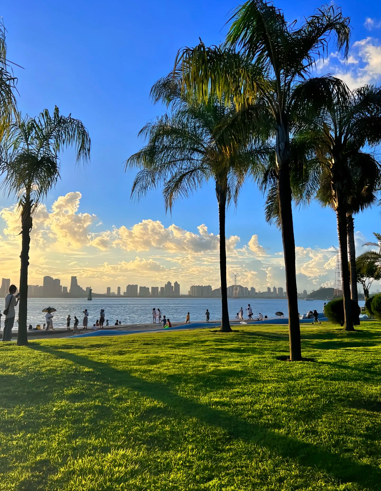
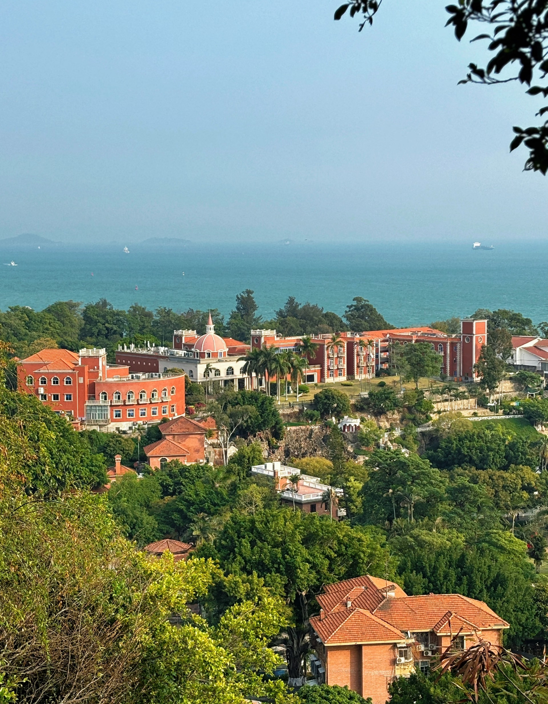
鼓浪屿
鼓浪屿，原名"圆沙洲"，位于福建省厦门市思明区鼓浪屿街道，岛上气候宜人，四季如春，无车马喧嚣，有鸟语花香，素有"海上花园"之誉。鼓浪屿全岛的绿地覆盖率超过40%，植物种群丰富，各种乔木、灌木、藤木、地被植物共90多科，1000多种。代表景点有：日光岩、菽庄花园、皓月园、毓园、鼓浪石、鼓浪屿钢琴博物馆、郑成功纪念馆、海底世界、天然海滨浴场、海天堂构等。
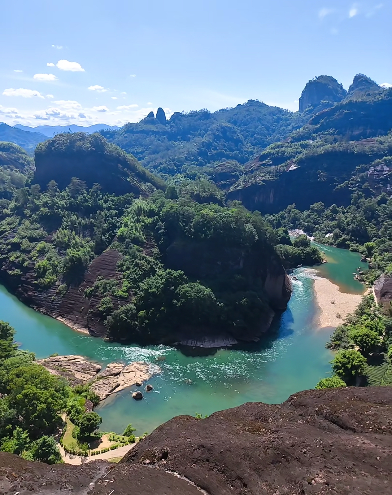
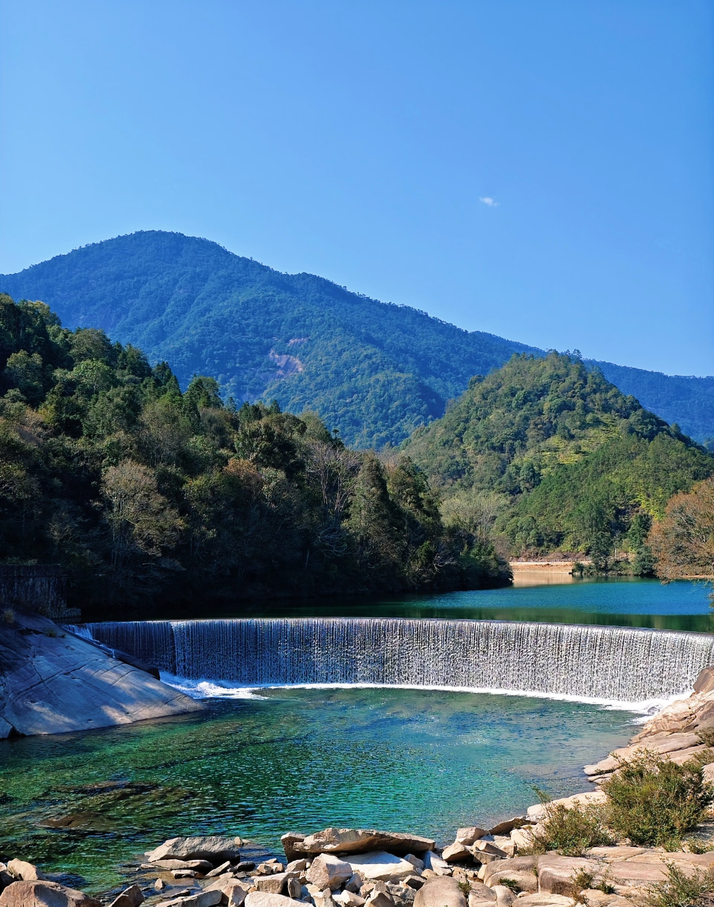
武夷山
武夷山位于江西与福建西北部两省交界处，武夷山脉北段东南麓总面积999.75平方公里，是中国著名的风景旅游区和避暑胜地。属典型的丹霞地貌，是首批国家级重点风景名胜区之一，于1999年12月被联合国教科文组织列入《世界遗产名录》，是全球生物多样性保护的关键地区。武夷山是三教名山。自秦汉以来，武夷山就为羽流禅家栖息之地，留下了不少宫观、道院和庵堂故址。武夷山还曾是儒家学者倡道讲学之地。
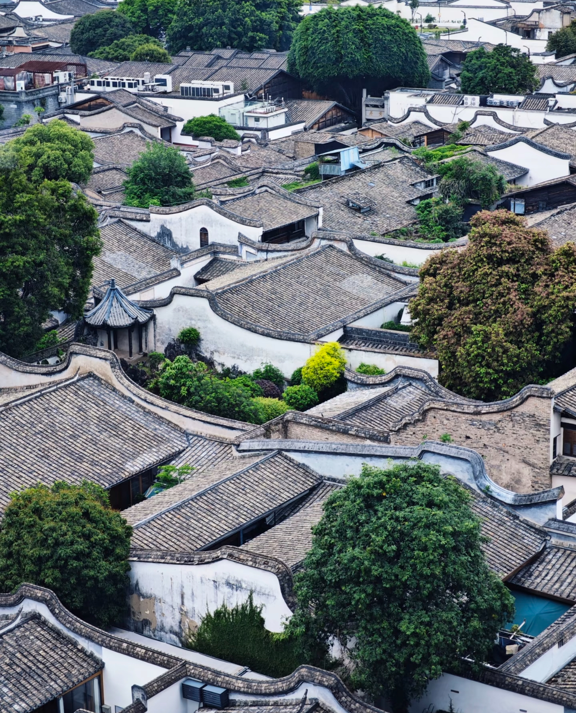

 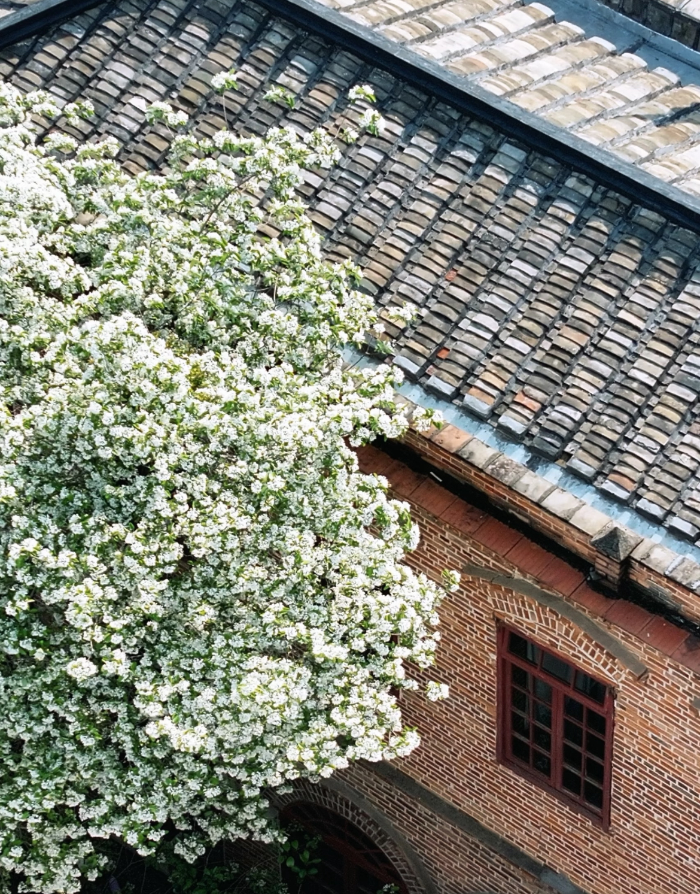
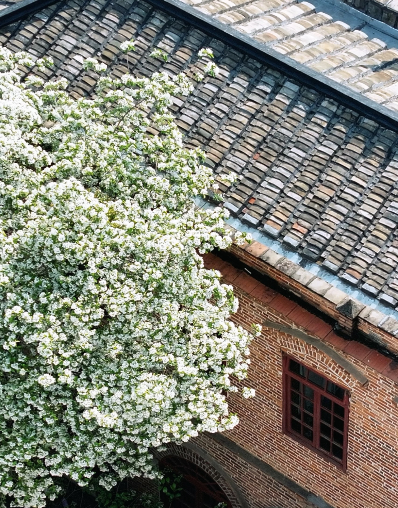
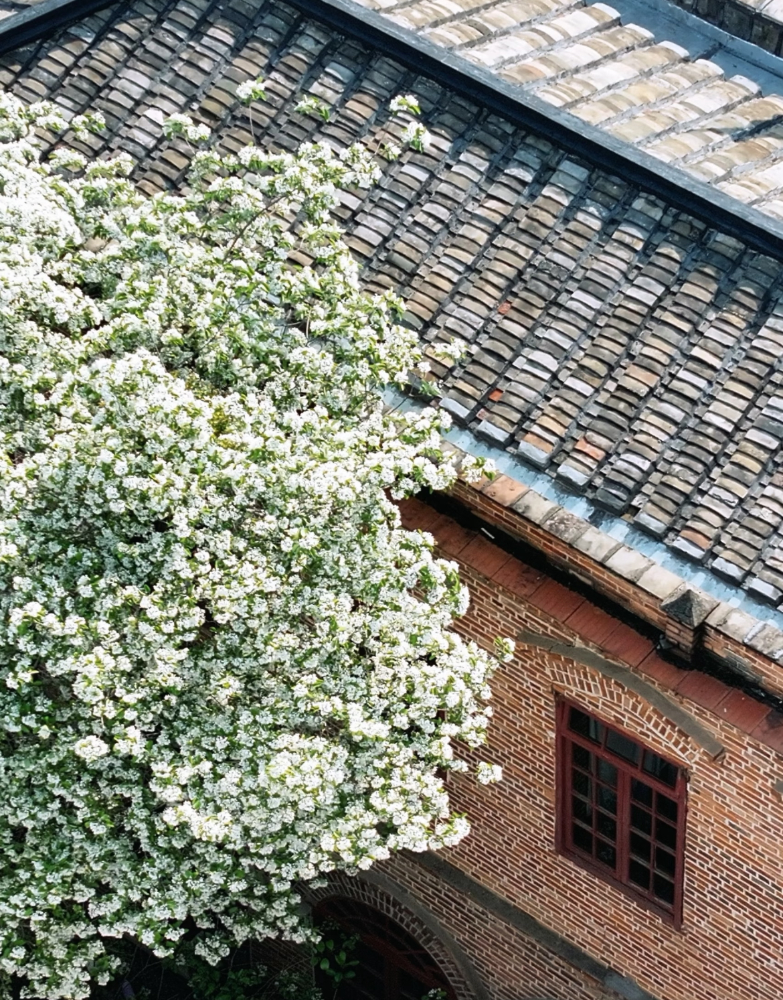
三坊七巷
三坊七巷是国家5A级旅游景区，是福州老城区经历了建国后的拆迁建设后仅存下来的一部分。是福州的历史之源、文化之根，自晋、唐形成起，便是贵族和士大夫的聚居地，清至民国走向辉煌。区域内现存古民居约有270座，有159处被列入保护建筑。以沈葆桢故居、林觉民故居、严复故居等9处典型建筑为代表的三坊七巷古建筑群，被国务院公布为全国重点文物保护单位。
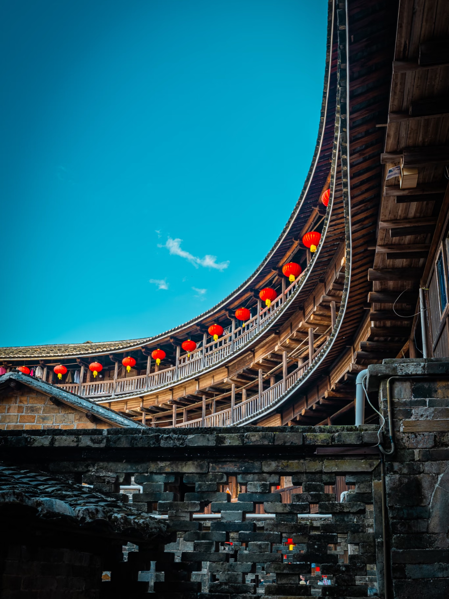
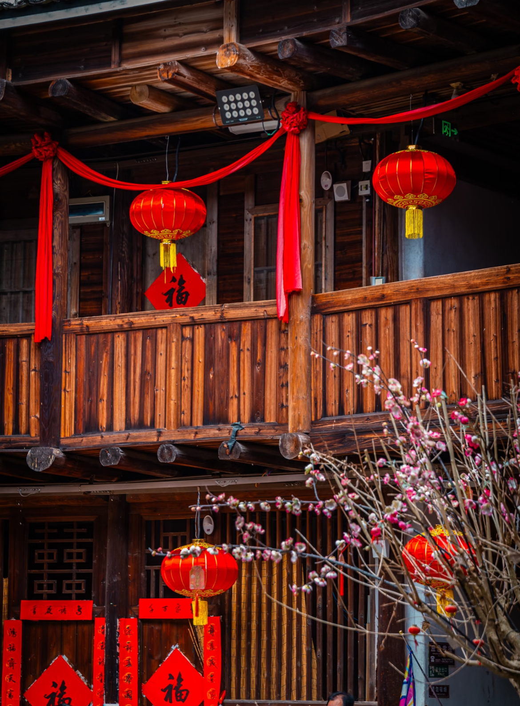
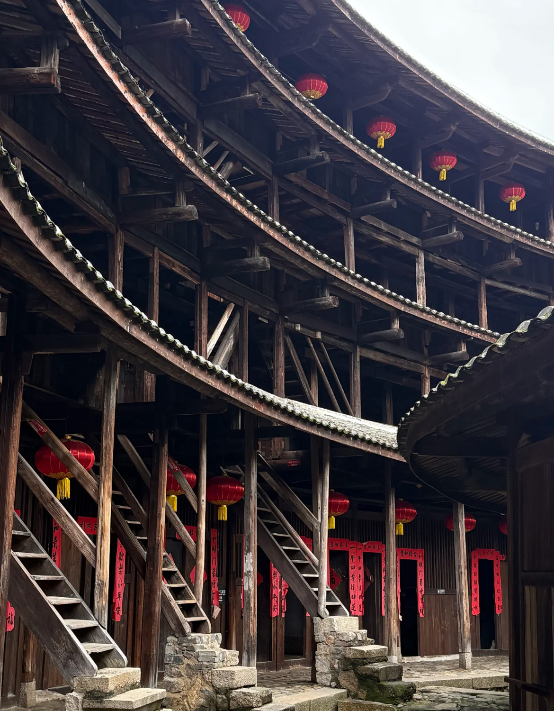
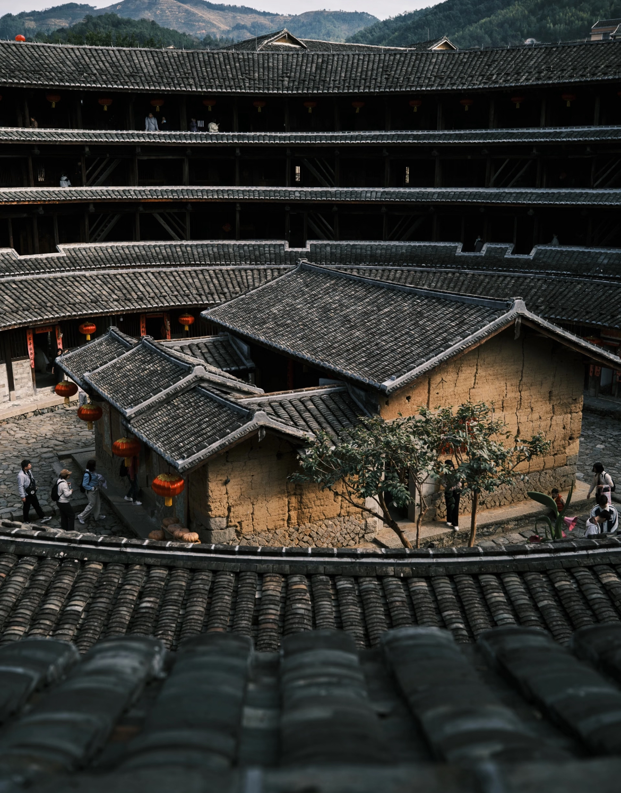
永定土楼
福建土楼，又称福建圆楼，是中华文明的瑰宝，是世界上独一无二的、神话般的山村民居建筑，是中国古建筑的一朵奇葩，它以历史悠久、风格独特、规模宏大、结构精巧等特点独立于世界民居建筑艺术之林。福建土楼的建筑材料甚为奇特，由粘土、糯米、红糖、竹片、水等组成，建成的土楼冬暖夏凉，具有很强的抗台风、抗地震能力。